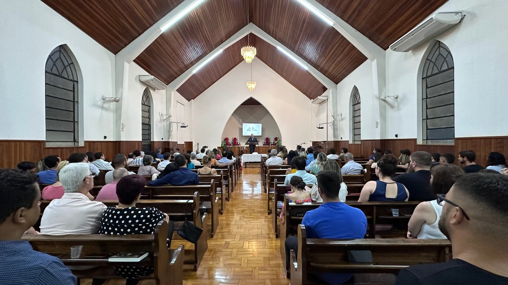
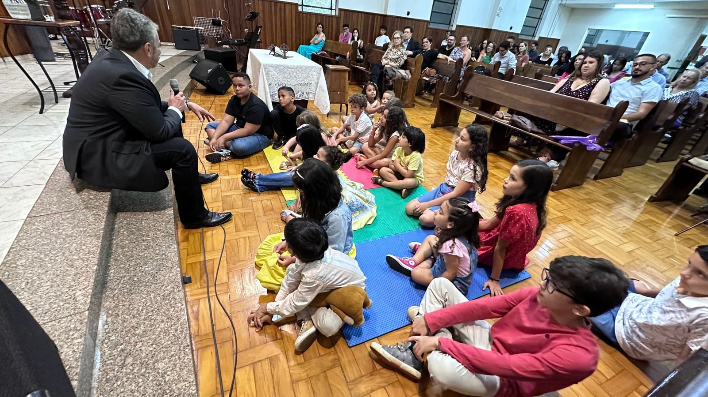
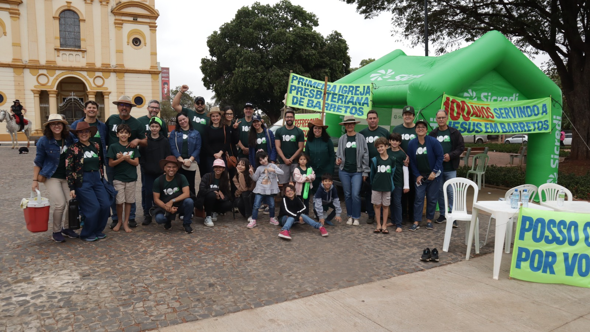
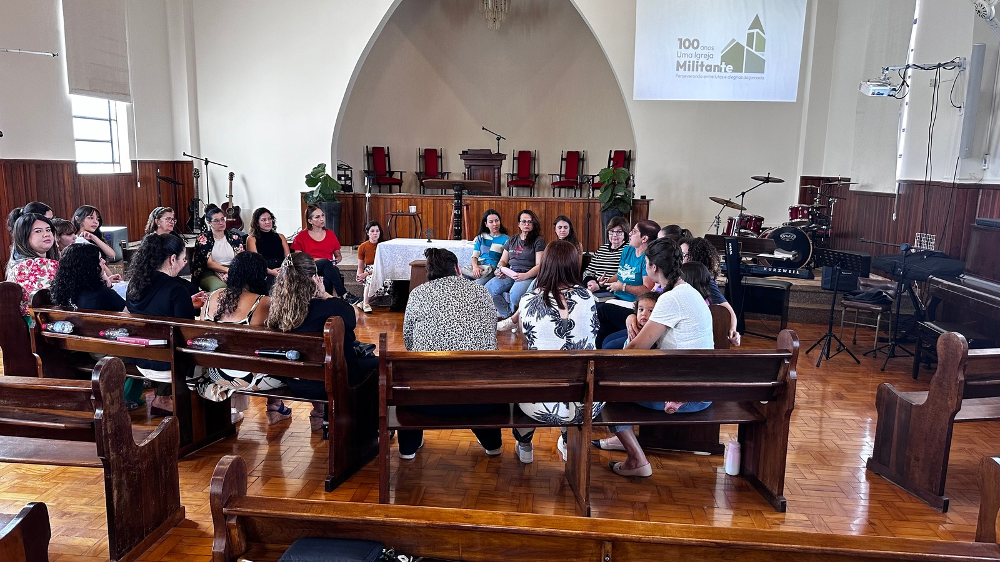
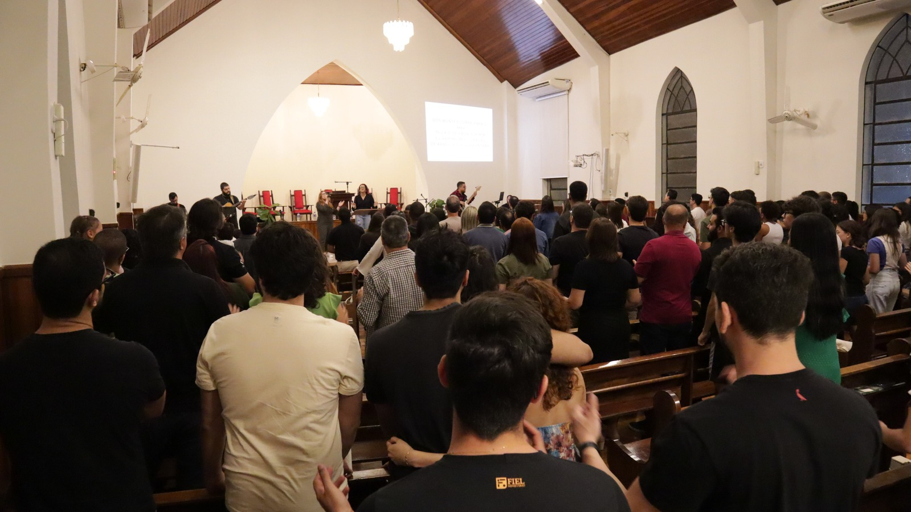

Fundada em 1924
No meio da cidade, apontando para o alto
No meio da cidade, apontando para o alto
Fundada em 1924, a Primeira Igreja Presbiteriana de Barretos tem mais de um século de história proclamando o evangelho de Cristo com fidelidade, relevância e amor. Nascida do esforço missionário do Rev. Robert Dale Daffin, a IPBarretos foi organizada com o compromisso de ser uma igreja reformada, missional, contemporânea, educativa e voltada para o coração.
Ao longo dos anos, temos servido a cidade de Barretos por meio do ensino das Escrituras, discipulado intencional, adoração reverente, ações sociais e um profundo senso de comunidade.
Com sólido ensino centrado na Palavra de Deus, envolvimento de todas as faixas etárias, pequenos grupos espalhados pela cidade, e hospitalidade, nosso chamado é para glorificar a Deus e edificar vidas no meio da cidade, apontando para o alto.

Participe de nossa caminhada:
Domingo
Escola dominical - 09h30
Culto público - 18h30
Terça
Pequeno Grupo Fortaleza - 19h30
Quarta
Pequeno Grupo Paulo Prata - 20h
Sexta
Pequeno Grupo Adolescentes - 20h
Pequeno Grupo Jovens - 20h


